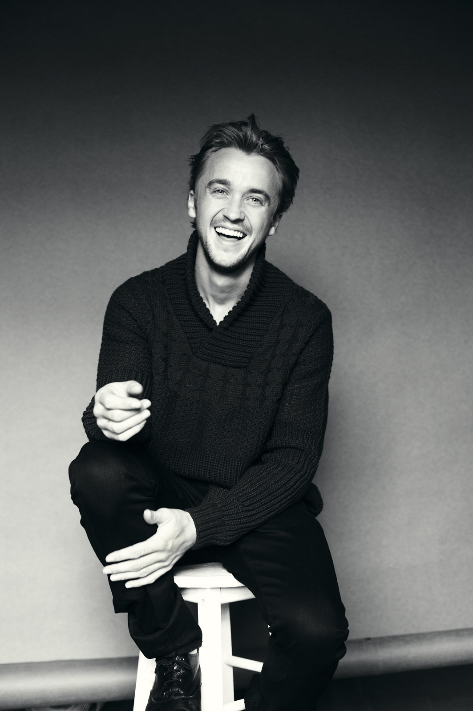

Tom Felton
ABOUT
Actor who won MTV Movie Awards for Best Villain in 2010 and 2011 for his portrayal of Draco Malfoy in the Harry Potter films. In his film career, he has played roles in Full Circle, Murder in the First, and Second Sight.
TRIVIA
In 2011, he played a role in Rise of the Planet of the Apes.
FAMILY LIFE
His parents, Sharon and Peter, raised him alongside his three younger brothers. He dated actress Phoebe Tonkin from 2006 to 2008. He has also dated Jade Olivia aka Jade Gordon.
MOVIES
Harry Potter(Series), The Flash, Rise Of The Planet Of Apes, The Borrowers, Megan Leavey, Anna And The King, A United Kingdom, Risen, From The Rough, The Apparition, In Secret, Murder In The First, Belle, Against The Sun, 13Hrs, Stratton, Message From The King, Sheep And Wolves, The Disappeared, White Other, Second Sight: Hide And Seek, How I Didn't Become A Piano Player, Feed, Labyrinth, Erasure, Ophelia, Home Farm Twins, Evac.
Actor who won MTV Movie Awards for Best Villain in 2010 and 2011 for his portrayal of Draco Malfoy in the Harry Potter films. In his film career, he has played roles in Full Circle, Murder in the First, and Second Sight.
TRIVIA
In 2011, he played a role in Rise of the Planet of the Apes.
FAMILY LIFE
His parents, Sharon and Peter, raised him alongside his three younger brothers. He dated actress Phoebe Tonkin from 2006 to 2008. He has also dated Jade Olivia aka Jade Gordon.
MOVIES
Harry Potter(Series), The Flash, Rise Of The Planet Of Apes, The Borrowers, Megan Leavey, Anna And The King, A United Kingdom, Risen, From The Rough, The Apparition, In Secret, Murder In The First, Belle, Against The Sun, 13Hrs, Stratton, Message From The King, Sheep And Wolves, The Disappeared, White Other, Second Sight: Hide And Seek, How I Didn't Become A Piano Player, Feed, Labyrinth, Erasure, Ophelia, Home Farm Twins, Evac.

Tom Felton
Gender: Male
Birthday: September 22, 1987
Height: 5' 9"
Hair Colour: Dark Blond
Eye colour: Blue
Family: Peter Felton, Sharon Felton, Ashley Felton,, Chris Felton, Jonathan Felton
Birth Sign: Virgo
Birth-Place:Epsom, England